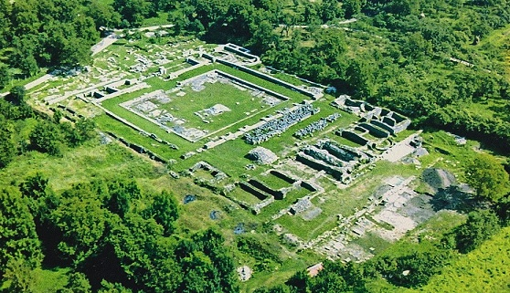
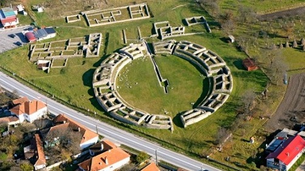
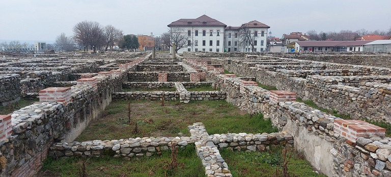
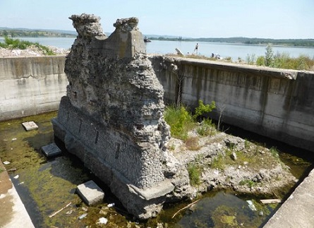
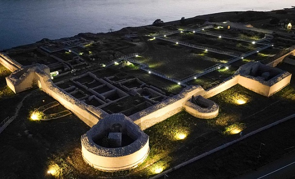
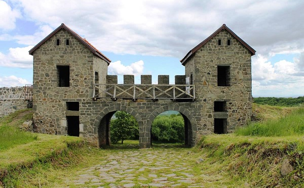

RUMANIA
El territorio
de la actual Rumania era parte integrante de la provincia romana de Dacia,
conquistada por el emperador Trajano hacia el 106. La mayoría de sus habitantes,
conocidos como los Dacios, procedían de Tracia, ubicada en el norte de Grecia.
Durante el siglo III se iniciaron las incursiones de los Godos en la región,
después de atravesar el Danubio, a las que siguieron posteriores oleadas de
invasores como Hunos, Eslavos y Búlgaros, que hicieron de Dacia un constante
campo de batalla, mientras la población romanizada mantuvo la lengua y la
identidad latina. De sus restos destacamos:
El Limes del Danubio y
Sarmizegetusa Regia, en las montañas Orastie,
construida sobre un acantilado de 1200m de altura con
sus seis fortalezas de Banita, Capalna, Costesti-Blidaru, Costesti-Cetatuie,
Luncani-Piatra Rosie, así como la propia Sarmizegetusa.
Sarmizegetusa también tenía un
distrito sagrado, uno de los santuarios dacios más importantes y más grandes. La
capital dacia alcanzó su apogeo bajo Decébalo, el rey dacio derrotado en dos
campañas militares por el emperador Trajano.
- El Castro Romano Arutela, situado en el margen izquierdo del río Olt. Construido en la época del emperador Adriano según la orden dada por Tito Flavio Constante, fiscal y gobernador militar de la Baja Dacia.
- En Adamclisi se localiza el castro romano de Tropaensium con su recinto amurallado y el Tropaeum Traiani.
- En Alba, Rosia Montana, Aquí se hallaba,
en época romana, el centro minero de Alburnus Maior. podemos visitar el museo del
complejo minero y los monumentos funerarios de de Tau Gauri, el asentamiento
romano de la colina Carpeni, que incluye las áreas funerarias y sacra.
Las antiguas explotaciones mineras del área de Piatra Corbului.
El sistema hidráulico romano del sector minero de Paru-Carpeni.
- En Alba Iulia se halla la antigua Apulum. En Apulum se encontraba el principal fuerte romano de la Dacia y en él estaba asentada, de modo permanente, la Legio XIII Gemina. Se conserva la puerta Principalis Dextra, acceso Sur, del campamento romano. Destaca el Museo del Principia.
- En Constanza, la antigua Tomis. Aquí fue
desterrado Ovidio. La ciudad fue renombrada como Constantia, en honor de la
hermanastra del emperador Constantino el Grande. Destacan los restos del
campamento romano y su Museo.
El edificio de los mosaicos, un almacén, de tres plantas, que unía la ciudad
alta con el puerto. Se construyó en el siglo IV, manteniendo su función
comercial hasta el siglo VII. En la actualidad, es accesible tan sólo un tercio
del edificio.
Su parque arqueológico con sus edificios del siglo III-IV.
Anualmente en Constanza el Festival de la Antigua Tomis
- En Hunedoara la antigua capital de la Dacia romana, Sarmizegetusa. La Colonia Ulpia Traiana Sarmizegetusa fue fundada por Terentius Scaurianus, primer gobernador de la nueva provincia romana de Dacia, entre los años 108 y 110. Obtuvo el rango de colonia y el derecho latino para sus habitantes. La ciudad fue el centro administrativo, político y religioso de la Dacia romana durante los siglos II y III. Fue uncampamento romano alrededor del cual nació un vicus. Destaca su foro, anfiteatro, la escuela de gladiadores, horreun termas y el templo dedicado a Némesis.
|
 |
 Fotos https://rumaniando.com |
- En Deva se localiza el Museo de la Civilización dacio-romana.
- En Drobeta Turnu Severin se localiza el campamento romano y el vicus que se desarrollo al abrigo del fuerte, el anfiteatro y sus puertas de hierro, el puente de trajano y las termas. Fotos: Zeurino - Țara Severinului
|
 |
 |
- En Campulung se conservan las ruinas del campamento militar romano de Jidava. Construido a finales del siglo II, en época de Septimio Severo. Formaba parte de la cadena defensiva del Limes Transalutanus. Se han consolidado sus muralla y reconstruido una torre.
- En Capidava destaca su campamento romano con todo el perímetro amurallado. Fue levantadoo por unidades de la Legio XI Claudia y la Legio V Macedonica, en torno al 103. Destruido por los godos probablemente en sus raids de los años 248-250, siendo reconstruido durante el reinado de Galieno y la Tetrarquía. Los bizantinos construyeron una nueva edificación, que permaneció en pie al menos hasta el siglo XI. Foto: discoverdobrogea.ro

- En Harsova destaca el campamento romano de Carsium.
- En Cluj-Napoca, municipium Aelium Hadrianum Napocenses y posteriormente alcanzó el estatus de Colonia Aurelia Napoca. Llegó a ser la capital de la Dacia Porolissensis. Se han conservados muy pocos restos romanos.
- En Zalau destaca Porolissum, con su campamento romano. Es el yacimiento más grande y mejor conservado de Rumania. También destaca su anfiteatro militar. Anualmente en Porolissum un Festival romano. El fuerte inicialmente fue construido de madera y luego fue ampliado y reconstruido de piedra. Alrededor del campamento se expandió un asentamiento civil. En la época de Adriano Porolissum se convirtió en el centro administrativo de la provincia de Dacia Porolissensis, y durante la época del rey Septimio Severo recibió el estatuto de ciudad. En 1970 comenzaron las excavaciones y descubrieron los restos del campamento romano, torres de defensa, termas, templos, anfiteatro, calles, casas.....más info: Porolissum - "Civis Romanus sum"

- El campamento romano de Geoagiu, en torno a él se desarrolló un asentamiento civil o cannabae. La zona era conocida por las propiedades terapéuticas de sus aguas termales, localizándose un complejo termal a 8 km. del fuerte. Las termas romanas, Thermae Dodonae.